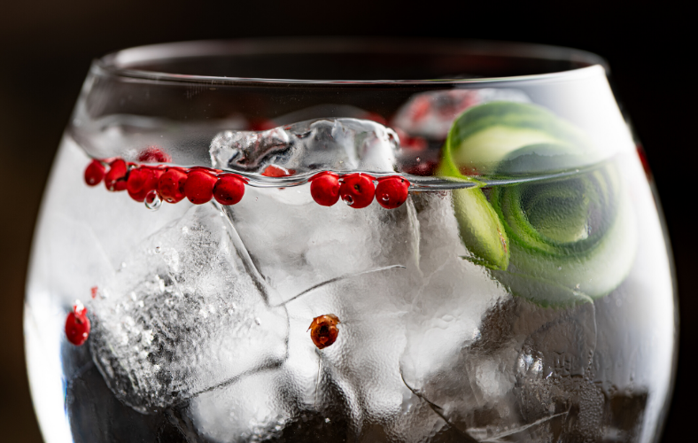

GinTonic

The best gin and tonic balances the bitterness of tonic water against the aromatics of the gin.
Ingredients:
- 3 ounces (1/4 cup plus 2 tablespoons) gin
- 1/2 ounce (1 tablespoon) fresh lime juice
- 4 ounces (1/2 cup) tonic water
- Lime wedge or slice
- Ice
Instructions:
- Fill a high ball glass with ice
- Add gin and lime juice
- Top with tonic water
- Garnish with lime wedge or slice
Return to main page